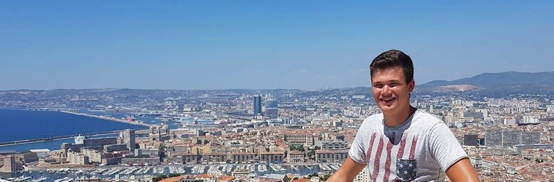

Mijn naam is Ralph van Aken. Ik ben student facility management aan de Hogeschool van Arnhem en Nijmegen.
Dit portfolio is ontwikkeld voor de minor Smart Industry. In dit portfolio zullen verschillende onderwerpen besproken worden die ik tijdens deze minor tegen ben gekomen.
Zo zijn er interessante artikelen en producten die ik graag met jullie deel.
De volgende onderwerpen staan centraal voor de minor Smart Industry:
- Smart Start
- Smart Connection
- Smart Project
- Smart Technologie
- Smart Business
Intresse in een van deze onderwerpen?
Klik dan op desbetreffende button bovenaan deze pagina.
Naam: Ralph van Aken
Geboortedatum: 22 augustus 1998
Studie: Facility Management
Woonplaats: Etten (GLD)

Om de minor goed te doorlopen heb ik een Smart Journey ontwikkeld die een weergave geeft van mijn competenties.
In deze Smart Journey is te zien hoever ik de competenties beheer die van mij gevraagd worden tijdens deze minor.
Link Smart Journey!
Link competenties